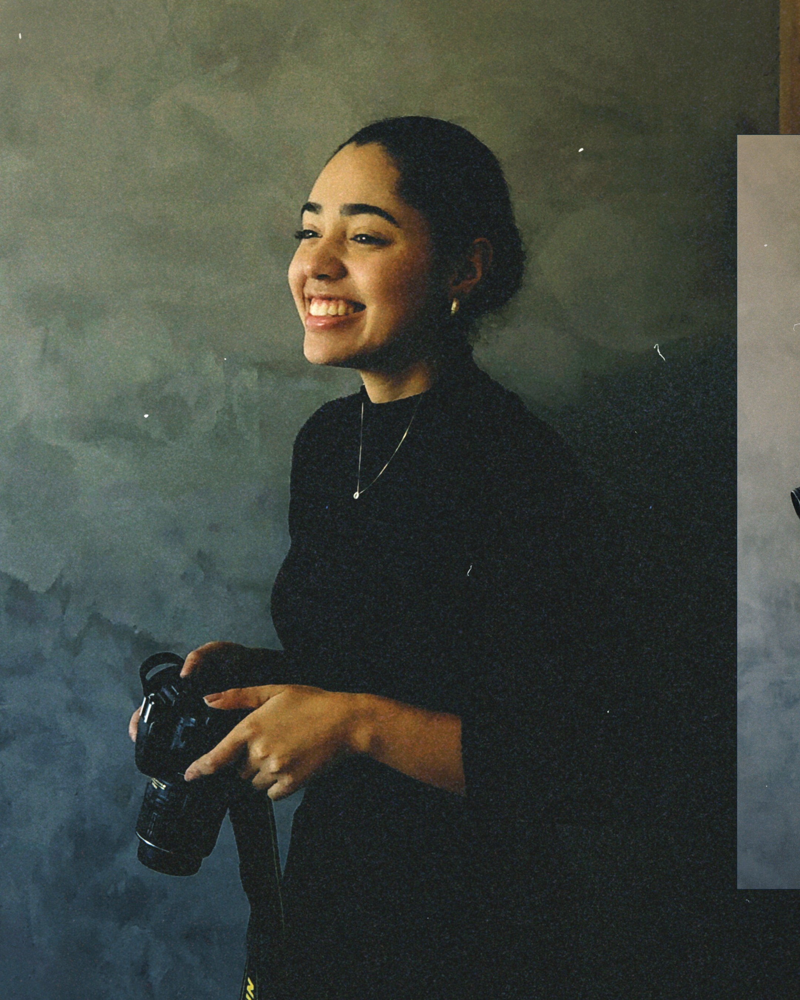

A mente por trás da lente
Emily Feitosa
A minha jornada com a fotografia começou na curiosidade pela luz que molda as formas. Hoje, o que busco não é apenas a estética, mas a força da identidade feminina e a emoção genuína de um "sim".
Especializada em capturar momentos com uma alma atemporal, acredito que a beleza reside na autenticidade de um olhar e na história única de cada união que nunca se repetirá.
+5
Anos de Experiência
100%
Entrega Autoral
"Fotografar é colocar na mesma linha de mira a cabeça, o olho e o coração."
— Henri Cartier-Bresson